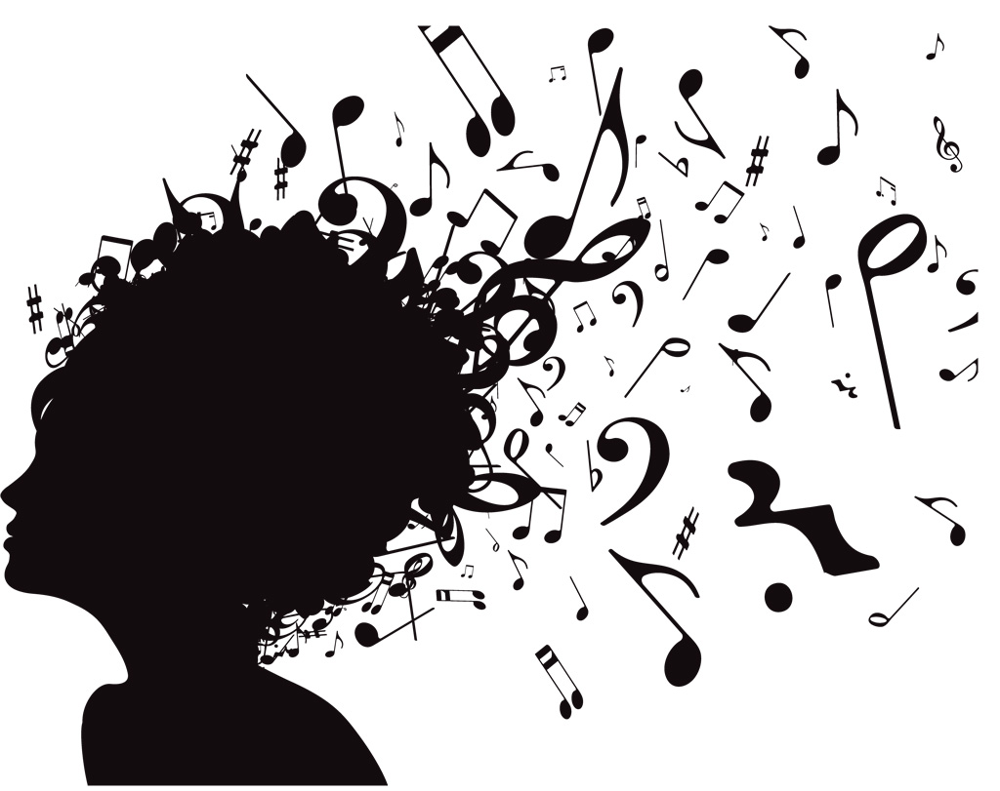
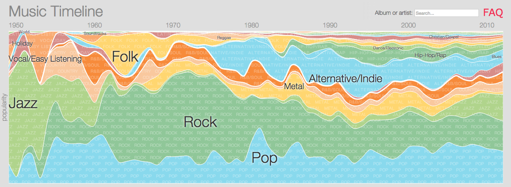

Overview of Music History
Music is a form of expressive, creative, art. It can be described as instrumentation, melody or harmony, vocal,notes, keys, major & minor, all theses along with all the endless amounts of variations you can think of. The history of music is seen to be a little more profound, it tends to be a little confusing & collective but one thing can be said about the origins of music is that it's rich in culture.
Background
Regarding the origins of music, that is such a broad topic since music is so unique & personal to it's artist, country, culture, it'd be nearly imposible to generaize it & put it into one category. We could go over all the different stories & possibilities that music derived from but we'd run out of webpage. It's history is as old as time & scattered all over the world, everyone has had their own encounter, experience & connection to music. We're here to bring you some facts about that history & a little bit of insight into those origins.
Genres
As many of you know, music over the centuries has been categorized into labels & groups. We call them genres, they include music of all different kinds, created to distinugish the distinct sounds of music in the simplest form. The reality is that there is no actual limit to music genres, since some music has no boundary or labels we've only been taught to think so. If you've ever wondered how many genres exsist nowadays take a look at the most comprehensive list of music genres available on the internet right here, linked on our site.